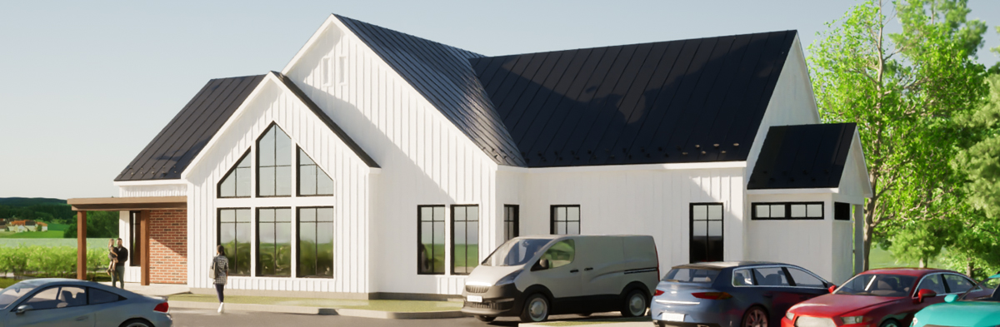

Mais qu’est-ce que La Base ?
Initialement propulsée par le rêve de deux podiatres à installer leur petite famille à Bromont, La Base a pris vie d’elle-même pour en devenir une communauté de professionnels de la santé œuvrant tous vers le même but : vous aider à mieux jouer dehors! En effet, peu importe la discipline, la santé est la fondation d’une bonne pratique sportive, c’est la base !

La Base est aussi devenue un lieu inusité pour pratiquer le ski… à la base de la montagne! Les gens de la région ont maintenant à leur disposition un simulateur de ski de haute technologie leur permettant d’avoir un accompagnement personnalisé par un professionnel du ski.
Enfin, La Base c’est une clinique podiatrique hors du commun. Du cycliste occasionnel au golfeur passionné en passant par le jeune skieur, nos deux podiatres travaillent toujours dans le but de vous aider à pratiquer vos activités dans le bonheur. Parce qu’on va se le dire, il y a peu de place au plaisir quand on a mal aux pieds! Ils sont d’ailleurs les seuls podiatres au Québec ayant reçu une formation professionnelle de Bootfitting pour les bottes de ski.
Nos Services
La Base est avant tout un regroupement de professionnels de la santé pour vous accompagner dans la pratique de vos sports favoris. Que vous soyez un skieur compétitif ou un marcheur du dimanche, c’est l’endroit pour trouver votre :
Podiatre
Un podiatriste est un professionnel de la santé spécialisé dans le diagnostic et le traitement des affections du pied.
Médecin du sport
Un médecin du sport est un professionnel de la santé spécialisé dans la prévention, le diagnostic et le traitement des blessures liées à l'activité physique et à la pratique sportive.
Physiothérapeute
Un physiothérapeute est un professionnel de la santé qui utilise des techniques manuelles et des exercices thérapeutiques pour traiter les douleurs musculaires et articulaires, ainsi que pour aider à la réadaptation physique après une blessure ou une opération.
Kinésiologue
Un kinésiologue est un professionnel de la santé qui utilise l'activité physique et l'exercice pour prévenir et traiter les blessures et les maladies, ainsi que pour améliorer la performance physique et la condition physique générale de ses clients.
Ostéopathe
Un ostéopathe est un professionnel de la santé qui traite les douleurs et les dysfonctionnements du corps en utilisant des manipulations manuelles pour rétablir l'équilibre et la fonctionnalité des tissus et des structures corporelles.
Orthopédiste
Un orthopédiste est un chirurgien spécialisé dans le diagnostic et le traitement des maladies et des blessures liées au système musculo-squelettique, y compris les os, les articulations, les muscles, les tendons et les ligaments.
Entraîneur de ski
Un entraîneur de ski est un professionnel spécialisé dans l'enseignement des techniques de ski, la préparation physique des skieurs et l'élaboration de programmes d'entraînement personnalisés pour améliorer la performance des athlètes en ski.
*Aucune référence médicale n’est nécessaire pour prendre rendez-vous
Émile Bernard
Physiothérapeute chez Mont Physio
montphysio.com
e.bernard@montphysio.com
579-256-0065
Mes Services
- Thérapie manuelle orthopédique
- Ponctures Physiothérapiques avec Aiguilles Sèches (PPAS)
- Positionnement sur vélo et prise en charge du cycliste
- Évaluation du patron de course et prise en charge du coureur
- Traitement de la mâchoire et des maux de tête
Mélodie Gilbert
Physiothérapeute
418-957-6901
Mes Services
- Physiothérapie générale
- Analyse de patron de course et suivi de blessure du coureur
- Thérapie par onde de choc (Shockwave)
- Thérapie manuelle
- Et bien plus!